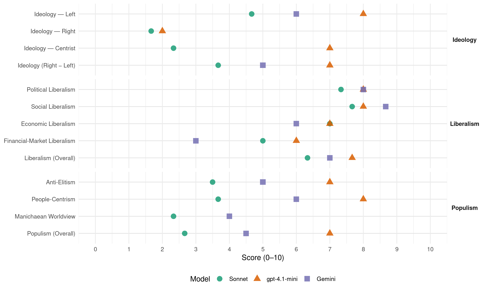

LSDP (Lithuania, 2012)
manifesto_id 88320_201210
Get full text: This site shows derived annotations and short verbatim quotes only. The full manifesto text is © Manifesto Project / WZB — obtain it via manifesto-project.wzb.eu using the manifesto_id above.
Headline scores
| Dimension | Sonnet | gpt-4.1-mini | Gemini |
|---|---|---|---|
| Populism (Overall) | 2.7 | 7.0 | 4.5 |
| Anti-Elitism | 3.5 | 7.0 | 5.0 |
| People-Centrism | 3.7 | 8.0 | 6.0 |
| Manichaean Worldview | 2.3 | – | 4.0 |
| Ideology (Right − Left) | 3.7 | 7.0 | 5.0 |
| Liberalism (Overall) | 6.3 | 7.7 | 7.0 |
| Political Liberalism | 7.3 | 8.0 | 8.0 |
| Social Liberalism | 7.7 | 8.0 | 8.7 |
| Economic Liberalism | 7.0 | 7.0 | 6.0 |
| Financial-Market Liberalism | 5.0 | 6.0 | 3.0 |
Evidence per dimension
Economic Liberalism
Gemini · score 5.0 · verified · chunk 1
“ne laukinės, bet socialiai orientuotos rinkos ekonomikos”
savo siekius formuojame pagal programinius tikslus įgyvendindami ne laukinės, bet socialiai orientuotos rinkos ekonomikos modelį Lietuvoje. Pasisakome už
Gemini · score 4.0 · mixed · chunk 2
“nuo perdėtai liberalizuoto ir chaotiško”
kultūros ir meno sektorių nuo perdėtai liberalizuoto ir chaotiško administravimo, diegti
Gemini · score 7.0 · verified · chunk 3
“antimonopolines Europos Sąjungos priemones integruotos, laisvos”
Būtina remti antimonopolines Europos Sąjungos priemones integruotos, laisvos ir veiksmingos Europos Sąjungos vidaus rinkos
gpt-4.1-mini · score 7.0 · verified · chunk 1
“socialiai orientuotos rinkos ekonomikos modelį Lietuvoje”
Mes ir anksčiau, ir dabar savo siekius formuojame pagal programinius tikslus įgyvendindami ne laukinės, bet socialiai orientuotos rinkos ekonomikos modelį Lietuvoje. Pasisakome už rinkos reguliavimo principus, nukreiptus į vienintelę užduotį, kad visi Lietuvos žmonės, o ne dalis visuomenės gyventų geriau, ir ne kokioje nors tolimoje ateityje, bet šiandien.
gpt-4.1-mini · score 7.0 · verified · chunk 2
“pritraukti užsienio investicijas į kultūros ir kūrybinių industrijų skatinimą”
Stiprinti kultūros ir kūrybinių industrijų sąveiką su kitais susijusiais sektoriais (turizmo, viešbučių, restoranų, sporto, pramogų parkų, tradicinės pramonės, žemės ūkio, sveikatos apsaugos ir t.t.), pritraukti užsienio investicijas į kultūros ir kūrybinių industrijų skatinimą. Atnaujinti valstybinių auditų kultūros ir meno srityje pagrindines nuostatas, kad valstybinių auditorių viešai pateikiamos išvados būtų profesionalios, aptartos su audituojamomis institucijomis bei būtų paisoma kultūros ir meno srities specifikos,
gpt-4.1-mini · score 7.0 · verified · chunk 3
“remti antimonopolines Europos Sąjungos priemones integruotos, laisvos ir veiksmingos Europos Sąjungos vidaus rinkos išvystymui”
Mes pasisakome už visapusį Europos Sąjungos socialinės chartijos įgyvendinimą, socialinės apsaugos sistemų harmonizavimą, ypatingą dėmesį skiriant visuotiniam žmonių užimtumui ir minimalių socialinių standartų Europos Sąjungoje įdiegimui, socialinei sanglaudai ir skurdo mažinimui. Būtina remti antimonopolines Europos Sąjungos priemones integruotos, laisvos ir veiksmingos Europos Sąjungos vidaus rinkos išvystymui ir šalių narių ekonominės sanglaudos stiprinimui, siekti, kad Lietuva įsijungtų į euro zoną.
Sonnet · score 5.0 · mixed · chunk 1
“socialiai orientuotos rinkos ekonomikos modelį”
savo siekius formuojame pagal programinius tikslus įgyvendindami ne laukinės, bet socialiai orientuotos rinkos ekonomikos modelį Lietuvoje
Sonnet · score 5.0 · mixed · chunk 2
“skatinti konkurenciją šilumos gamybos srityje”
Mes sieksime: skatinti konkurenciją šilumos gamybos srityje. Skirti lėšų biokurą naudojančioms technologijoms diegti. Apriboti pelnus šilumos gamintojams
Sonnet · score 7.0 · verified · chunk 3
“antimonopolines Europos Sąjungos priemones integruotos, laisvos ir veiksmingos”
Būtina remti antimonopolines Europos Sąjungos priemones integruotos, laisvos ir veiksmingos Europos Sąjungos vidaus rinkos išvystymui
Financial-Market Liberalism
Gemini · score 4.0 · verified · chunk 1
“bankai labiau prisidėtų prie harmoningo ir tvaraus ekonomikos”
neleistinais veiksmais nesukeltų naujos ekonominės krizės. Daryti įtaką, kad bankai labiau prisidėtų prie harmoningo ir tvaraus ekonomikos gaivinimo, vykdytų atsakingą
Gemini · score 2.0 · verified · chunk 2
“neverčiant jų skolintis iš komercinių bankų”
gyventojams priimtinesnį modelį, neverčiant jų skolintis iš komercinių bankų. Investicijos bus
gpt-4.1-mini · score 6.0 · verified · chunk 1
“kontroliuoti, kad bankininkai neleistinais veiksmais nesukeltų naujos ekonominės krizės”
Mes sieksime:Kontroliuoti, kad bankininkai neleistinais veiksmais nesukeltų naujos ekonominės krizės. Daryti įtaką, kad bankai labiau prisidėtų prie harmoningo ir tvaraus ekonomikos gaivinimo, vykdytų atsakingą ūkio kreditavimą. Liberalizuoti naujų investicinių bankų steigimosi Lietuvoje sąlygas. Peržiūrėti finansų įstaigų apmokestinimo politiką.
Sonnet · score 4.0 · verified · chunk 1
“bankininkai neleistinais veiksmais nesukeltų naujos ekonominės krizės”
Kontroliuoti, kad bankininkai neleistinais veiksmais nesukeltų naujos ekonominės krizės. Daryti įtaką, kad bankai labiau prisidėtų
Sonnet · score 5.0 · verified · chunk 2
“viešo bei privataus kapitalo partnerystės galimybes”
Terminalo statybai siekti panaudoti ES lėšas, viešo bei privataus kapitalo partnerystės galimybes
Sonnet · score 6.0 · verified · chunk 3
“Rusijos narystė Pasaulio Prekybos Organizacijoje atveria naujų galimybių”
Rusijos narystė Pasaulio Prekybos Organizacijoje atveria naujų galimybių verslo ryšių plėtrai ir sudaro palankesnes sąlygas investicijoms
Political Liberalism
Gemini · score 8.0 · verified · chunk 1
“puoselėdama teisinės valstybės principus”
įstatymui kultūra. Teisingumo principas turi persmelkti visų teisėsaugos institucijų veiklą. Visuomenė, puoselėdama teisinės valstybės principus, teisingai reikalauja ir teisėsaugos
Gemini · score 8.0 · verified · chunk 2
“garantuoja lygias politines, ekonomines, socialines”
savo piliečiams, nepriklausomai nuo jų tautybės garantuoja lygias politines, ekonomines, socialines ir kultūrines teises
Gemini · score 8.0 · verified · chunk 3
“teisėsaugos institucijos efektyviai dirbtų saugant mūsų šalies gyventojų teises ir laisves”
Suprasdami šio principo svarbą, sieksime, kad teisėsaugos institucijos efektyviai dirbtų saugant mūsų šalies gyventojų teises ir laisves, užkardytų ar laiku reaguotų į daromus bet kokius
gpt-4.1-mini · score 8.0 · verified · chunk 1
“Lygios visų Lietuvos žmonių galimybės, lygių teisių užtikrinimas ir kova su bet kokios formos diskriminacija yra valstybės pareiga”
Valstybės valdymo ir vietos savivaldos sistema Lietuvoje turi būti orientuota į visuomenės poreikių tenkinimą ir socialinį teisingumą, veikti efektyviai ir skaidriai, turėti visuomenės pasitikėjimą. Lygios visų Lietuvos žmonių galimybės, lygių teisių užtikrinimas ir kova su bet kokios formos diskriminacija yra valstybės pareiga ir būtina sąlyga kuriant gerovės valstybę.
gpt-4.1-mini · score 7.0 · verified · chunk 2
“mes už valstybę, kuri savo piliečiams, nepriklausomai nuo jų tautybės garantuoja lygias politines, ekonomines, socialines ir kultūrines teises bei laisves”
SANTYKIAI SU TAUTINĖMIS BENDRIJOMIS Mūsų pozicija tautinių santykių atžvilgiu yra griežta ir aiški: mes už valstybę, kuri savo piliečiams, nepriklausomai nuo jų tautybės garantuoja lygias politines, ekonomines, socialines ir kultūrines teises bei laisves. Per paskutinius ketverius metus valdančioji koalicija neskyrė reikalingo dėmesio valstybės politikai dėl tautinių santykių ir tautinių mažumų, nutraukė prieš tai nuosekliai plėtotas veiklas, atvėrė kelią tautinei nesantaikai ir visuomenės susiskaldymui.
gpt-4.1-mini · score 9.0 · verified · chunk 3
“užtikrinti žmogaus teisių apsaugą per nuosekliai tobulinamą teisinę sistemą”
Mes sieksime: Užtikrinti žmogaus teisių apsaugą per nuosekliai tobulinamą teisinę sistemą. Lietuvos piliečių teisių ir pareigų įgyvendinimas turi būti neatsiejamas nuo demokratijos raidos ir atsakomybės už šalies ateitį.
Sonnet · score 7.0 · verified · chunk 1
“Teisminės valdžios atvirumas ir efektyvumas”
Teisminės valdžios atvirumas ir efektyvumas – esminė teisinės valstybės buvimo sąlyga. Pilietinėje visuomenėje turi būti užtikrinama nuostata
Sonnet · score 7.0 · verified · chunk 2
“e-demokratijos sprendimus aktyvinti visuomenės”
Plėtojant e-demokratijos sprendimus aktyvinti visuomenės ir viešojo administravimo institucijų sąveiką, informacinėmis ir ryšio technologijų priemonėmis skatinti pilietinį aktyvumą
Sonnet · score 8.0 · verified · chunk 3
“stiprinti Lietuvos teisines institucijas, didinti jų nepriklausomumą”
būtina sugrąžinti visuomenei pasitikėjimą teisingumu, stiprinti Lietuvos teisines institucijas, didinti jų nepriklausomumą, mažinti korupciją juose
Liberalism (Overall)
Gemini · score 7.0 · verified · chunk 1
“puoselėdama teisinės valstybės principus”
įstatymui kultūra. Teisingumo principas turi persmelkti visų teisėsaugos institucijų veiklą. Visuomenė, puoselėdama teisinės valstybės principus, teisingai reikalauja ir teisėsaugos
Gemini · score 6.0 · verified · chunk 2
“garantuoja lygias politines, ekonomines, socialines”
savo piliečiams, nepriklausomai nuo jų tautybės garantuoja lygias politines, ekonomines, socialines ir kultūrines teises
Gemini · score 8.0 · verified · chunk 3
“teisėsaugos institucijos efektyviai dirbtų saugant mūsų šalies gyventojų teises ir laisves”
Suprasdami šio principo svarbą, sieksime, kad teisėsaugos institucijos efektyviai dirbtų saugant mūsų šalies gyventojų teises ir laisves, užkardytų ar laiku reaguotų į daromus bet kokius
gpt-4.1-mini · score 8.0 · verified · chunk 1
“socialiai orientuotos rinkos ekonomikos modelį Lietuvoje”
Mes ir anksčiau, ir dabar savo siekius formuojame pagal programinius tikslus įgyvendindami ne laukinės, bet socialiai orientuotos rinkos ekonomikos modelį Lietuvoje. Pasisakome už rinkos reguliavimo principus, nukreiptus į vienintelę užduotį, kad visi Lietuvos žmonės, o ne dalis visuomenės gyventų geriau, ir ne kokioje nors tolimoje ateityje, bet šiandien.
gpt-4.1-mini · score 7.0 · verified · chunk 2
“mes už valstybę, kuri savo piliečiams, nepriklausomai nuo jų tautybės garantuoja lygias politines, ekonomines, socialines ir kultūrines teises bei laisves”
SANTYKIAI SU TAUTINĖMIS BENDRIJOMIS Mūsų pozicija tautinių santykių atžvilgiu yra griežta ir aiški: mes už valstybę, kuri savo piliečiams, nepriklausomai nuo jų tautybės garantuoja lygias politines, ekonomines, socialines ir kultūrines teises bei laisves. Per paskutinius ketverius metus valdančioji koalicija neskyrė reikalingo dėmesio valstybės politikai dėl tautinių santykių ir tautinių mažumų, nutraukė prieš tai nuosekliai plėtotas veiklas, atvėrė kelią tautinei nesantaikai ir visuomenės susiskaldymui.
gpt-4.1-mini · score 8.0 · verified · chunk 3
“užtikrinti žmogaus teisių apsaugą per nuosekliai tobulinamą teisinę sistemą”
Mes sieksime: Užtikrinti žmogaus teisių apsaugą per nuosekliai tobulinamą teisinę sistemą. Lietuvos piliečių teisių ir pareigų įgyvendinimas turi būti neatsiejamas nuo demokratijos raidos ir atsakomybės už šalies ateitį.
Sonnet · score 6.0 · verified · chunk 1
“Teisminės valdžios atvirumas ir efektyvumas”
Teisminės valdžios atvirumas ir efektyvumas – esminė teisinės valstybės buvimo sąlyga. Pilietinėje visuomenėje turi būti užtikrinama nuostata
Sonnet · score 6.0 · verified · chunk 2
“lygias politines, ekonomines, socialines ir kultūrines teises”
mes už valstybę, kuri savo piliečiams, nepriklausomai nuo jų tautybės garantuoja lygias politines, ekonomines, socialines ir kultūrines teises bei laisves
Sonnet · score 7.0 · verified · chunk 3
“stiprinti Lietuvos teisines institucijas, didinti jų nepriklausomumą”
būtina sugrąžinti visuomenei pasitikėjimą teisingumu, stiprinti Lietuvos teisines institucijas, didinti jų nepriklausomumą, mažinti korupciją juose
Anti-Elitism
Gemini · score 5.0 · verified · chunk 1
“konservatorių ir kitų dešiniųjų partijų valdymas”
pablogino šalies padėtį. Konservatorių ir kitų dešiniųjų partijų valdymas pablogino šalies padėtį Po spartaus
Gemini · score 5.0 · verified · chunk 2
“valdančioji koalicija neskyrė reikalingo dėmesio”
Per paskutinius ketverius metus valdančioji koalicija neskyrė reikalingo dėmesio valstybės politikai
gpt-4.1-mini · score 7.0 · verified · chunk 1
“konservatorių ir liberalų „naktinės“ mokesčių reformos klaidas”
Mes siūlome nedelsiant ištaisyti dešiniųjų padarytas klaidas. Skelbiame, kad valstybės finansų sistema turi būti nukreipta į užimtumo didinimą ir pagrindinių šalies socialinių poreikių (socialinės apsaugos, švietimo, sveikatos apsaugos) užtikrinimą, gyventojų pajamų skirtumo mažinimą. Ši sistema turi būti tvari pajamų ir išlaidų subalansavimo atžvilgiu. Ji turi atkurti mokesčių mokėtojų pasitikėjimą valstybe. Viešieji finansai – šalies gerovei ir ūkio plėtrai Ekonominis šalies augimas turi atsinaujinti ir tarnauti visų jos žmonių gerovei. Vykdysime priemones, kad augančios ekonomikos rezultatus kuo greičiau pajustų visi, mažėtų gyvenimo lygio skirtumai tarp pasiturinčių ir neturtingų žmonių, gerėtų kiekvieno žmogaus gyvenimo kokybė. Tam efektyviai naudosime šalies viešųjų lėšų fondus. Ateities gerovę galima sukurti tik diegiant nuoseklios fiskalinės politikos principus, suderintus su struktūrine šalies politika, įgyvendinant griežtą valstybės finansų sistemos kontrolę, skaidrų ir visuomenei aiškų viešųjų lėšų fondų panaudojimą. Didesnes biudžeto pajamas užtikrintų pramonės ir verslo plėtra, gerėjantis mokesčių administravimas, racionali bei socialiai teisinga mokesčių politika. Būtinas ir einamųjų išlaidų (išskyrus socialinių programų) taupymas, kartu finansavimo, skirto valstybės investicijoms, didinimas, palaikant valstybės skolos santykį su bendruoju vidaus produktu bei skolos aptarnavimo išlaidas priimtinu lygiu. Gerai suvokdami, kad makroekonominis stabilumas – tai gyvenimo lygio kilimo garantas, ypač pasaulinės ekonominės bei finansinės krizės akivaizdoje, bei siekdami užtikrinti šalies finansinį tvarumą, mes: Vykdysime apdairią fiskalinę politiką, užtikrinsime šalies makroekonominį stabilumą, griežtą valstybės finansų sistemos kontrolę ir valdžios sektoriaus finansų ilgalaikį tvarumą. Garantuosime tvarų žmonių pajamų augimą ir tinkamai apmokamą darbą, visomis tinkamomis priemonėmis mažinsime šalyje infliacijos augimo grėsmę, valdysime šalies mokėjimų einamosios sąskaitos deficitą, skatinsime gyventojų privačių santaupų investavimą į ekonomiką. Užtikrinsime socialines garantijas mažiausias pajamas gaunantiems, biudžeto deficitą mažinsime ne padidinta mokesčių našta iš savo darbo ir pajamų gyvenantiems žmonėms, o didesniu dirbančiųjų skaičiumi, išaugusiu vartojimu. Visą dėmesį sutelksime ne į biudžeto ir kitų nacionalinių fondų išlaidų mažinimą, bet į ekonomikos atsigavimo generuojamą pajamų didinimą. Skatinsime ekonomikos atsigavimą aktyviai panaudojant Europos struktūrinių fondų paramą, pritraukiant Lietuvos fizinių ir juridinių asmenų, Europos investicijų banko, Europos rekonstrukcijos ir plėtros banko, Šiaurės investicijų banko, kitų tarptautinių finansinių institucijų lėšas. Didinsime biudžeto pajamas per verslumo skatinimą bei griežtų priemonių šešėlinei ekonomikai mažinti taikymą. Sieksime pertvarkyti viešųjų pirkimų sistemą taip, kad būtų garantuotas jų skaidrumas, iš esmės sumažėtų biurokratinė našta, būtų išnaudotos visos elektroninės erdvės bei centralizuotų pirkimų schemos teikiamos galimybės, išskirtinis dėmesys būtų teikiamas viešųjų išlaidų efektyvumui, plačiau taikant kaštų ir naudos įvertinimo principą. Biudžeto išlaidų taupymą grįsime konkrečiais prioritetais, kai kurioms sritims biudžeto išlaidos neturi būti mažinamos, tačiau panaudojamos racionaliau. Atkūrus ekonomikos augimą prioritetiškai didinsime finansavimą sritims, užtikrinant gyventojams teikiamų paslaugų apimtis bei kuriant naujas darbo vietas. Mokesčių politika turi būti nukreipta į žmonių socialinės gerovės skatinimą, socialinės atskirties bei pajamų skirtumų sumažinimą, solidarumo visuomenėje stiprinimą, viešųjų šalies finansų pajėgumo didinimą, bet ji negali žlugdyti verslo ir gamybos. Dėl to, nustatant ir įgyvendinant valstybines apmokestinimo priemones, būtina kartu atsisakyti tokio apmokestinimo, kuris skaudžiai paveiktų neturtingiausius Lietuvos žmones, pensininkus ir neįgaliuosius, smulkųjį verslą.
Sonnet · score 5.0 · verified · chunk 1
“bankų godumas, sustabdė ir mūsų šalies”
bendras ekonominis Europos ir viso pasaulio nuosmukis, kurį daugiausia sukėlė bankų godumas, sustabdė ir mūsų šalies ekonominį augimą
Sonnet · score 2.0 · verified · chunk 3
“didėjantį žmonių nusivylimą teisingumo įgyvendinimu”
Mes matome didėjantį žmonių nusivylimą teisingumo įgyvendinimu Lietuvoje, mažėjantį pasitikėjimą pagrindinėmis demokratinėmis vertybėmis
Ideology — Centrist
gpt-4.1-mini · score 7.0 · verified · chunk 1
“aktyvios socialinės, ekonominės ir kultūrinės mūsų visuomenės daugumos”
Tam reikia aktyvios socialinės, ekonominės ir kultūrinės mūsų visuomenės daugumos. Socialinė dauguma – tai socialiai atsakingų ir jautrių žmonių dauguma, kuri žino, kad be socialinės atsakomybės negyvuoja nė viena moderni demokratija.
Sonnet · score 2.0 · verified · chunk 1
“Mums svarbiausia – žmogus”
Mūsų pasirinktas kelias yra kitoks. Mums svarbiausia – žmogus. Mes turime aiškų planą
Sonnet · score 3.0 · verified · chunk 2
“tuščiai šiandien nešvaistyti mokesčių mokėtojų lėšų”
raginame tuščiai šiandien nešvaistyti mokesčių mokėtojų lėšų, o atominės energetikos plėtojimui ieškoti kitų alternatyvų
Sonnet · score 2.0 · verified · chunk 3
“sugrąžinti visuomenei pasitikėjimą teisingumu”
esame įsitikinę, kad būtina sugrąžinti visuomenei pasitikėjimą teisingumu, stiprinti Lietuvos teisines institucijas
Ideology — Left
Gemini · score 7.0 · verified · chunk 1
“būtina įgyvendinti progresinių mokesčių sistemą”
stiprinimą, viešųjų šalies finansų didinimą, bet ji negali žlugdyti verslo ir gamybos. Todėl vėl pabrėžiame, kad būtina įgyvendinti progresinių mokesčių sistemą, kartu atsisakyti nepagrįsto apmokestinimo
Gemini · score 5.0 · verified · chunk 2
“laikomės Europos kairiųjų partijų politikos”
Mes nuosekliai laikomės Europos kairiųjų partijų politikos saugant aplinką
gpt-4.1-mini · score 8.0 · verified · chunk 1
“progresine ir socialiai teisinga mokesčių sistema”
Solidari visuomenė, grindžiama progresine ir socialiai teisinga mokesčių sistema, užtikrinančia tvarų šalies ekonominį augimą, saugantį gamtą ir žmogų, garantuojančia paramą vaikams, šeimoms, motinystei ir tėvystei, seneliams, neįgaliesiems ir skurstantiems.
Sonnet · score 7.0 · verified · chunk 1
“progresinių mokesčių sistemą”
būtina įgyvendinti progresinių mokesčių sistemą, kartu atsisakyti nepagrįsto apmokestinimo, kuris skaudžiai veikia neturtingus Lietuvos žmones
Sonnet · score 4.0 · verified · chunk 2
“Apriboti pelnus šilumos gamintojams ir tiekėjams”
Apriboti pelnus šilumos gamintojams ir tiekėjams, nesiimantiems jokių pigesnės šilumos gamybos ir tiekimo priemonių
Sonnet · score 3.0 · verified · chunk 3
“socialinei sanglaudai ir skurdo mažinimui”
ypatingą dėmesį skiriant visuotiniam žmonių užimtumui ir minimalių socialinių standartų Europos Sąjungoje įdiegimui, socialinei sanglaudai ir skurdo mažinimui
Ideology (Right − Left)
Gemini · score 6.0 · verified · chunk 1
“būtina įgyvendinti progresinių mokesčių sistemą”
stiprinimą, viešųjų šalies finansų didinimą, bet ji negali žlugdyti verslo ir gamybos. Todėl vėl pabrėžiame, kad būtina įgyvendinti progresinių mokesčių sistemą, kartu atsisakyti nepagrįsto apmokestinimo
Gemini · score 4.0 · verified · chunk 2
“laikomės Europos kairiųjų partijų politikos”
Mes nuosekliai laikomės Europos kairiųjų partijų politikos saugant aplinką
gpt-4.1-mini · score 7.0 · verified · chunk 1
“progresine ir socialiai teisinga mokesčių sistema”
Solidari visuomenė, grindžiama progresine ir socialiai teisinga mokesčių sistema, užtikrinančia tvarų šalies ekonominį augimą, saugantį gamtą ir žmogų, garantuojančia paramą vaikams, šeimoms, motinystei ir tėvystei, seneliams, neįgaliesiems ir skurstantiems.
Sonnet · score 6.0 · verified · chunk 1
“progresinių mokesčių sistemą”
būtina įgyvendinti progresinių mokesčių sistemą, kartu atsisakyti nepagrįsto apmokestinimo, kuris skaudžiai veikia neturtingus Lietuvos žmones
Sonnet · score 3.0 · verified · chunk 2
“Apriboti pelnus šilumos gamintojams ir tiekėjams”
Apriboti pelnus šilumos gamintojams ir tiekėjams, nesiimantiems jokių pigesnės šilumos gamybos ir tiekimo priemonių
Sonnet · score 2.0 · verified · chunk 3
“socialinei sanglaudai ir skurdo mažinimui”
ypatingą dėmesį skiriant visuotiniam žmonių užimtumui ir minimalių socialinių standartų Europos Sąjungoje įdiegimui, socialinei sanglaudai ir skurdo mažinimui
Ideology — Right
gpt-4.1-mini · score 2.0 · verified · chunk 1
“agresyviam radikaliam nacionalizmui bei homofobijai”
Šalis, kurioje gerbiamos žmogaus teisės ir užtikrinamos lygios galimybės, kur nėra vietos agresyviam radikaliam nacionalizmui bei homofobijai. Šalis, kur moterys ir vyrai turi vienodas teises, galimybes ir pareigas, dalyvaujant darbo rinkoje, visuomenės gyvenime ir rūpinantis globotinais šeimos nariais.
Sonnet · score 1.0 · verified · chunk 1
“agresyviam radikaliam nacionalizmui bei homofobijai”
Šalis, kurioje gerbiamos žmogaus teisės ir užtikrinamos lygios galimybės, kur nėra vietos agresyviam radikaliam nacionalizmui bei homofobijai
Sonnet · score 2.0 · verified · chunk 2
“žemės ūkio paskirties žemė netaptų ne tik užsieniečių”
Kad žemės ūkio paskirties žemė netaptų ne tik užsieniečių, bet ir Lietuvos piliečių machinacijų objektu
Sonnet · score 2.0 · verified · chunk 3
“griežčiau reglamentuoti užsieniečių atvykimo įsidarbinimo tikslais”
Griežčiau reglamentuoti užsieniečių atvykimo įsidarbinimo tikslais tvarką, laikytis principo, kad trečiųjų šalių piliečių dalyvavimas darbo rinkoje nedidins nedarbo
Manichaean Worldview
Gemini · score 4.0 · verified · chunk 1
“daugiausia sukėlė bankų godumas”
pasaulio nuosmukis, kurį daugiausia sukėlė bankų godumas, sustabdė ir mūsų šalies ekonominį
gpt-4.1-mini · score 6.0 · mixed · chunk 1
“konservatorių ir liberalų „naktinės“ mokesčių reformos klaidas”
Atėję į valdžią konservatoriai jau 2008 metų gruodžio mėn. parodė, kad nemoka vertinti situacijos, yra nepasirengę valdyti ir priimti teisingų sprendimų: Užuot analizavę pasaulio ir Lietuvos ūkio raidą, beatodairiškai kaltino buvusias vyriausybes. Užuot parengę ekonomikos skatinimo programą, ėmėsi ekonomikos stabdymo veiksmų. Užuot analizavę tarptautinę patirtį, kaip kovoti su ekonomikos nuosmukiu, ir taikę pasiteisinusius metodus (skaidraus bankų sistemos stabilizavimo, privataus vartojimo skatinimo, paramos nacionalinei pramonei, valstybės investicinių ir socialinių programų plėtros), ėmėsi „naktinės“ 2008 metų mokesčių reformos ir taupymo sunkiausiai gyvenančių žmonių sąskaita. Užuot diskutavę su Lietuvos ekspertais, partijomis, visuomene, priiminėjo arogantiškus, nepamatuotus sprendimus, vienašališkai juos primesdami visai Lietuvai. Užuot kvietę dirbti kartu, gąsdino visuomenę krize.
Sonnet · score 4.0 · verified · chunk 1
“konservatoriai jau 2008 metų gruodžio mėn. parodė”
Atėję į valdžią konservatoriai jau 2008 metų gruodžio mėn. parodė, kad nemoka vertinti situacijos, yra nepasirengę valdyti
Sonnet · score 2.0 · verified · chunk 2
“valdančioji koalicija neskyrė reikalingo dėmesio”
Per paskutinius ketverius metus valdančioji koalicija neskyrė reikalingo dėmesio valstybės politikai dėl tautinių santykių
Sonnet · score 1.0 · verified · chunk 3
“lygybės įstatymui principo negerbimą”
mažėjantį pasitikėjimą pagrindinėmis demokratinėmis vertybėmis, lygybės įstatymui principo negerbimą, žmogaus orumo žeminimą
People-Centrism
Gemini · score 6.0 · verified · chunk 1
“suvokiame savo įsipareigojimų svarbą Lietuvos žmonėms”
socialiai atsakinga politinė jėga, suvokiame savo įsipareigojimų svarbą Lietuvos žmonėms. Mūsų visuomenė nori, kad šalyje
Gemini · score 6.0 · verified · chunk 2
“naudinga kiekvienam žmogui”
kūno kultūros ir sporto politiką, naudingą kiekvienam žmogui. Kurti programas
gpt-4.1-mini · score 8.0 · verified · chunk 1
“socialinė dauguma – tai socialiai atsakingų ir jautrių žmonių dauguma”
Tam reikia aktyvios socialinės, ekonominės ir kultūrinės mūsų visuomenės daugumos. Socialinė dauguma – tai socialiai atsakingų ir jautrių žmonių dauguma, kuri žino, kad be socialinės atsakomybės negyvuoja nė viena moderni demokratija. Ekonominė dauguma – tai žmonės, dirbantys savarankiškai, kūrybos, verslo žmonės, amatininkai ir darbininkai, kurie sunkiai dirba ir mažai uždirba, bet visi jie nori žinoti, kaip reikia kelti ekonomiką, sukurti naujas darbo vietas ir pagerinti savo gyvenimą. Ir pagaliau – kultūrinė dauguma, kuri vis daugiau turi lemti rinkimus ir mūsų raidos kryptį, nes ji kalba apie tikrąsias gyvenimo vertybes visuomenėje, Lietuvos kultūrą, būtiną mūsų visų sugyvenimą solidarioje visuomenėje.
Sonnet · score 6.0 · verified · chunk 1
“Mums svarbiausia – žmogus”
Mūsų pasirinktas kelias yra kitoks. Mums svarbiausia – žmogus. Mes turime aiškų planą
Sonnet · score 3.0 · verified · chunk 2
“visi Lietuvos gyventojai yra Tėvynei vienodai brangūs”
Esame įsitikinę, kad visi Lietuvos gyventojai yra Tėvynei vienodai brangūs ir turi būti lygūs ligos atveju
Sonnet · score 2.0 · verified · chunk 3
“sugrąžinti visuomenei pasitikėjimą teisingumu”
esame įsitikinę, kad būtina sugrąžinti visuomenei pasitikėjimą teisingumu, stiprinti Lietuvos teisines institucijas
Populism (Overall)
Gemini · score 5.0 · verified · chunk 1
“konservatorių ir kitų dešiniųjų partijų valdymas”
pablogino šalies padėtį. Konservatorių ir kitų dešiniųjų partijų valdymas pablogino šalies padėtį Po spartaus
Gemini · score 4.0 · verified · chunk 2
“valdančioji koalicija neskyrė reikalingo dėmesio”
Per paskutinius ketverius metus valdančioji koalicija neskyrė reikalingo dėmesio valstybės politikai
gpt-4.1-mini · score 7.0 · verified · chunk 1
“konservatorių ir liberalų „naktinės“ mokesčių reformos klaidas”
Mes siūlome nedelsiant ištaisyti dešiniųjų padarytas klaidas. Skelbiame, kad valstybės finansų sistema turi būti nukreipta į užimtumo didinimą ir pagrindinių šalies socialinių poreikių (socialinės apsaugos, švietimo, sveikatos apsaugos) užtikrinimą, gyventojų pajamų skirtumo mažinimą. Ši sistema turi būti tvari pajamų ir išlaidų subalansavimo atžvilgiu. Ji turi atkurti mokesčių mokėtojų pasitikėjimą valstybe. Viešieji finansai – šalies gerovei ir ūkio plėtrai Ekonominis šalies augimas turi atsinaujinti ir tarnauti visų jos žmonių gerovei. Vykdysime priemones, kad augančios ekonomikos rezultatus kuo greičiau pajustų visi, mažėtų gyvenimo lygio skirtumai tarp pasiturinčių ir neturtingų žmonių, gerėtų kiekvieno žmogaus gyvenimo kokybė. Tam efektyviai naudosime šalies viešųjų lėšų fondus. Ateities gerovę galima sukurti tik diegiant nuoseklios fiskalinės politikos principus, suderintus su struktūrine šalies politika, įgyvendinant griežtą valstybės finansų sistemos kontrolę, skaidrų ir visuomenei aiškų viešųjų lėšų fondų panaudojimą. Didesnes biudžeto pajamas užtikrintų pramonės ir verslo plėtra, gerėjantis mokesčių administravimas, racionali bei socialiai teisinga mokesčių politika. Būtinas ir einamųjų išlaidų (išskyrus socialinių programų) taupymas, kartu finansavimo, skirto valstybės investicijoms, didinimas, palaikant valstybės skolos santykį su bendruoju vidaus produktu bei skolos aptarnavimo išlaidas priimtinu lygiu. Gerai suvokdami, kad makroekonominis stabilumas – tai gyvenimo lygio kilimo garantas, ypač pasaulinės ekonominės bei finansinės krizės akivaizdoje, bei siekdami užtikrinti šalies finansinį tvarumą, mes: Vykdysime apdairią fiskalinę politiką, užtikrinsime šalies makroekonominį stabilumą, griežtą valstybės finansų sistemos kontrolę ir valdžios sektoriaus finansų ilgalaikį tvarumą. Garantuosime tvarų žmonių pajamų augimą ir tinkamai apmokamą darbą, visomis tinkamomis priemonėmis mažinsime šalyje infliacijos augimo grėsmę, valdysime šalies mokėjimų einamosios sąskaitos deficitą, skatinsime gyventojų privačių santaupų investavimą į ekonomiką. Užtikrinsime socialines garantijas mažiausias pajamas gaunantiems, biudžeto deficitą mažinsime ne padidinta mokesčių našta iš savo darbo ir pajamų gyvenantiems žmonėms, o didesniu dirbančiųjų skaičiumi, išaugusiu vartojimu. Visą dėmesį sutelksime ne į biudžeto ir kitų nacionalinių fondų išlaidų mažinimą, bet į ekonomikos atsigavimo generuojamą pajamų didinimą. Skatinsime ekonomikos atsigavimą aktyviai panaudojant Europos struktūrinių fondų paramą, pritraukiant Lietuvos fizinių ir juridinių asmenų, Europos investicijų banko, Europos rekonstrukcijos ir plėtros banko, Šiaurės investicijų banko, kitų tarptautinių finansinių institucijų lėšas. Didinsime biudžeto pajamas per verslumo skatinimą bei griežtų priemonių šešėlinei ekonomikai mažinti taikymą. Sieksime pertvarkyti viešųjų pirkimų sistemą taip, kad būtų garantuotas jų skaidrumas, iš esmės sumažėtų biurokratinė našta, būtų išnaudotos visos elektroninės erdvės bei centralizuotų pirkimų schemos teikiamos galimybės, išskirtinis dėmesys būtų teikiamas viešųjų išlaidų efektyvumui, plačiau taikant kaštų ir naudos įvertinimo principą. Biudžeto išlaidų taupymą grįsime konkrečiais prioritetais, kai kurioms sritims biudžeto išlaidos neturi būti mažinamos, tačiau panaudojamos racionaliau. Atkūrus ekonomikos augimą prioritetiškai didinsime finansavimą sritims, užtikrinant gyventojams teikiamų paslaugų apimtis bei kuriant naujas darbo vietas. Mokesčių politika turi būti nukreipta į žmonių socialinės gerovės skatinimą, socialinės atskirties bei pajamų skirtumų sumažinimą, solidarumo visuomenėje stiprinimą, viešųjų šalies finansų pajėgumo didinimą, bet ji negali žlugdyti verslo ir gamybos. Dėl to, nustatant ir įgyvendinant valstybines apmokestinimo priemones, būtina kartu atsisakyti tokio apmokestinimo, kuris skaudžiai paveiktų neturtingiausius Lietuvos žmones, pensininkus ir neįgaliuosius, smulkųjį verslą.
Sonnet · score 4.0 · verified · chunk 1
“bankų godumas, sustabdė ir mūsų šalies”
bendras ekonominis Europos ir viso pasaulio nuosmukis, kurį daugiausia sukėlė bankų godumas, sustabdė ir mūsų šalies ekonominį augimą
Sonnet · score 2.0 · verified · chunk 2
“visi Lietuvos gyventojai yra Tėvynei vienodai brangūs”
Esame įsitikinę, kad visi Lietuvos gyventojai yra Tėvynei vienodai brangūs ir turi būti lygūs ligos atveju
Sonnet · score 2.0 · verified · chunk 3
“didėjantį žmonių nusivylimą teisingumo įgyvendinimu”
Mes matome didėjantį žmonių nusivylimą teisingumo įgyvendinimu Lietuvoje, mažėjantį pasitikėjimą pagrindinėmis demokratinėmis vertybėmis
Social Liberalism